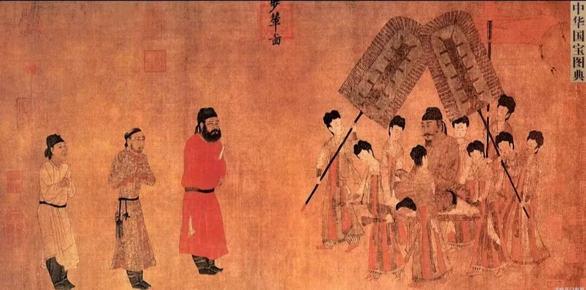

春风细雨走马去



唐代交通十分发达，以京师长安为中心的陆路交通网，以及由大运河和南方水乡构成的水路交通网四通八达， 同时，唐代驿站制度健全，为公私行旅和商贾往来提供了非常便利的条件。唐代养马业经历了一个由衰而盛的过程， 开元盛世，不仅政府拥有许多官马，民间私马数量也相当可观，马车成为重要的交通工具。
车在唐代可分为礼仪用车和日常用车两种， 唐朝严格规定了上自皇帝下至大臣、各个等级在各种礼仪场合的用车，这些礼仪用车绝大部分是沿袭前代的。
马是唐代的重要出行工具，上自皇帝，中经朝臣百官，下至进士侠客、商贾市民，无不骑马。
驴是比马低一等的出行工具。乘马者多为有权或有钱之人，而乘驴者大多属一般民众。
出行工具除了车、马、驴、牛外，还有骡、骆驼、象等。骡在当时还是使用比较多的， 史籍记载骑骡的人有胡人、隐士、奴仆等。